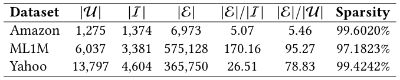
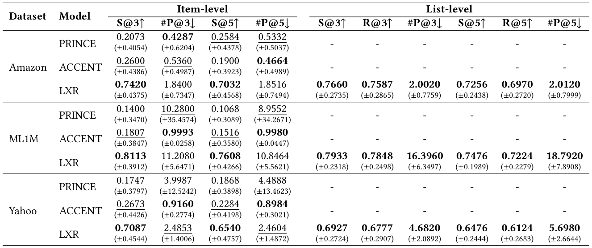
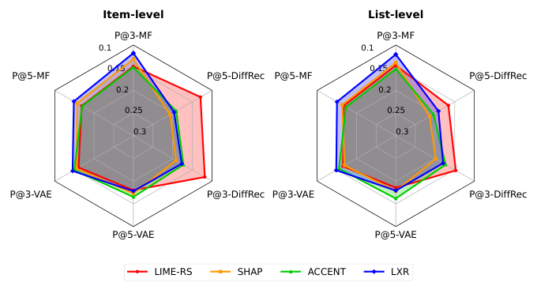
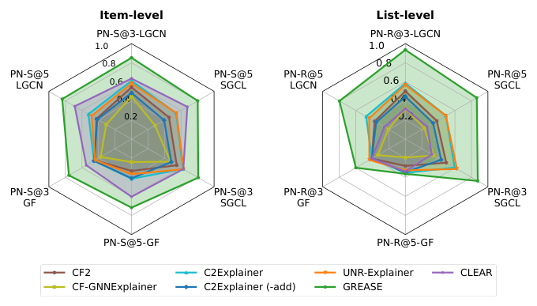
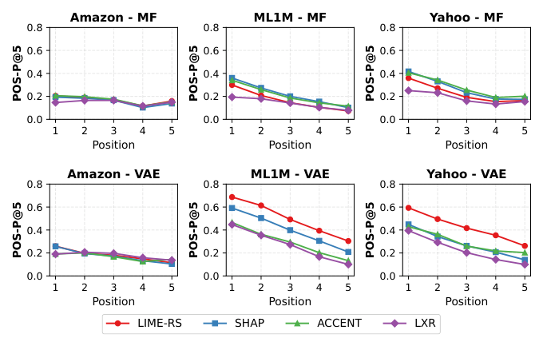
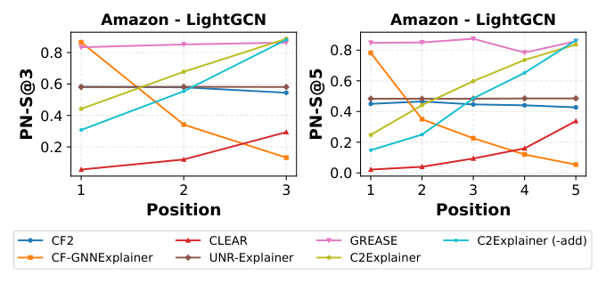

From Top-1 to Top-K: A Reproducibility Study and Benchmarking of Counterfactual Explanations for Recommender Systems (从 Top-1 到 Top-K：推荐系统反事实解释的可复现性研究与基准测试)
- 会议/期刊: SIGIR 2026 (第49届国际ACM SIGIR会议，Melbourne, VIC, Australia)
- 推荐链路定位: 重排/可解释性评测 (Re-ranking / Explainability Evaluation) — 面向已训练推荐模型的事后解释 (Post-hoc Explanation) 与可信评测
- 研究方向: 去偏公平、可信隐私与工业架构 (主) / 对话推荐与智能体仿真 (次，因解释生成与用户交互理解相关)
- 论文原文: https://arxiv.org/abs/2604.19663v1
- 开源代码: https://github.com/L2R-UET/CFExpRec
TL;DR (核心速览)
针对推荐系统反事实解释 (CE) 领域"各方法自定协议、无法公平比较"的碎片化痛点，本文系统复现并重实现 11 种 CE 方法（6 种推荐原生 + 5 种 GNN 解释器迁移），提出沿解释格式 (隐式/显式) × 评测层级 (item/list) × 扰动范围 (用户向量/交互图) 三维度的统一基准框架，首次将评测从 Top-1 扩展到 Top-K 列表级，并新增位置敏感的 PN-R 指标。在 3 个真实数据集、6 个推荐模型上的实验表明：效果-稀疏性权衡高度依赖方法与设置，item 级与 list 级结论基本一致，而图解释器在大图上存在显著可扩展性瓶颈。
Background & Motivation (背景与动机)
- 领域背景与主流范式: 反事实解释通过回答"若用户行为发生何种最小改变，推荐结果会如何变化"的 what-if 问题，为用户提供可操作、可理解的洞察，同时帮助工程师调试模型。现有 CE 方法按输出格式分为两大类：隐式方法（输出每个历史交互的重要性分数，如 LIME-RS、SHAP、LXR）与显式方法（直接输出需增删的交互子集，如 PRINCE、ACCENT、GREASE）。
- 现有方法局限 (Limitations of Prior Work):
- 协议异质性：不同方法使用不同数据集、推荐器、指标甚至解释格式，导致无法公平比较（表 1 系统对比了各方法原始论文的评测维度，可见无任何方法同时覆盖隐式/显式、item/list、向量/图、效果/稀疏/复杂度全部维度）。
- Top-1 视角局限：绝大多数方法仅解释单个推荐物品，而现代推荐系统输出的是 top-K 排序列表，缺乏列表级解释与评测框架。
- 图推荐器覆盖缺失：多数 CE 方法仅针对用户直接交互过的物品，无法为基于全交互图的 GNN 推荐器生成忠实解释。
- 核心挑战 (Key Challenge): 解释目标（重要性分数 vs. 交互子集）与推荐器输入表征（用户向量 vs. 交互图）的异质性，使得"用同一套指标公平比较"在数学上并不平凡——隐式方法需通过逐步掩码来间接评估，显式方法则直接测量扰动效果，二者需要统一的扰动协议才能对齐。
- 核心洞察与切入点 (Key Insight): 作者提出以扰动 (Perturbation) 为统一语言：无论隐式还是显式，最终都归结为"对输入施加扰动后 top-K 列表的变化程度"。据此设计 POS-P/NEG-P（隐式）、PN-S/PN-R（显式）等指标，并将评测层级从 item 级自然推广到 list 级，从而在单一框架下容纳所有方法。
Problem Formulation & Method (问题定义与方法架构)
1. 符号定义与输入表征 (Notations & Input Representations)
- 用户集 \(\mathcal{U}\)、物品集 \(\mathcal{I}\)、交互集 \(\mathcal{E}\)，建模为二部图 \(G=(\mathcal{U}\cup\mathcal{I},\mathcal{E})\)，二元交互矩阵 \(X\in\{0,1\}^{|\mathcal{U}|\times|\mathcal{I}|}\)。
- 用户 \(u\) 的交互向量 \(x_u\in\{0,1\}^{|\mathcal{I}|}\)，\(x_u[i]=1\) 表示用户曾交互过物品 \(i\)；\(\mathcal{I}_u\) 为用户交互过的物品集合。
- 已训练推荐模型 \(f_\theta\)（参数 \(\theta\) 在解释过程中固定不变），对候选物品 \(i\in\mathcal{I}\setminus\mathcal{I}_u\) 打分 \(f_\theta(i,x_u)\)，按分数降序排列，\(\text{rank}(i;x_u)\) 为物品 \(i\) 的排名位置。
- 仅关注 top-\(K\) 推荐，即 \(\text{rank}(i;x_u)\le K\)。
- 隐式格式：解释器输出掩码 \(m\in[0,1]^{|\mathcal{I}|}\)，每个元素反映对应历史交互的重要性。
- 显式格式：解释器直接输出扰动后的用户向量 \(x_u^p\in\{0,1\}^{|\mathcal{I}|}\)。
2. 整体流水线 (Overall Architecture)
数据流向：训练推荐模型 \(f_\theta\)（MF/VAE/DiffRec/LightGCN/GFormer/SimGCL）→ 对每个用户-物品对或 top-K 列表调用 CE 解释器（隐式输出重要性掩码，显式输出扰动向量）→ 按统一协议施加扰动（隐式按重要性排序逐步掩码，显式直接应用扰动）→ 计算效果、稀疏性、复杂度三类指标。
flowchart TD
A["输入层: 用户交互向量 x_u / 用户-物品交互图 G"] --> B["已训练推荐模型 f_θ (MF/VAE/DiffRec/LightGCN/GFormer/SimGCL)"]
B --> C["CE 解释器层: 隐式(重要性掩码 m) / 显式(扰动向量 x_u^p)"]
C --> D["统一扰动协议: 逐步掩码(隐式) / 直接应用(显式)"]
D --> E["评测层: item级 vs list级 × 效果(POS-P/NEG-P/PN-S/PN-R) + 稀疏性(Gini/#Perturb) + 复杂度(推理时间)"]3. 核心模块设计与数学原理 (Key Designs & Formulations)
(1) 三维度基准协议 (Benchmarking Protocol)
- 解释格式：隐式（重要性分数）vs. 显式（交互子集）。
- 评测层级：item 级（为 top-K 中每个物品各生成一个 CE，目标是使该物品移出列表）vs. list 级（为整个 top-K 列表生成单一 CE，目标是使列表中所有物品同时被移除）。
- 扰动范围：用户交互向量（MF/VAE/DiffRec）vs. 用户-物品交互图（LightGCN/GFormer/SimGCL）。
(2) 效果指标 (Effectiveness Metrics)
隐式格式采用扰动曲线指标。设 \(T\) 为扰动步数，每步移除 \((100/T)\%\) 的交互：
其中 \(x_u^{(t,pos)}\) 表示按重要性降序移除交互后的扰动输入（NEG-P 则按升序）。POS-P 越低说明移除高重要性交互能快速使目标物品排名下降，NEG-P 越高说明移除低重要性交互几乎无影响，二者共同反映解释的充分性。
显式格式采用必要性概率指标：
本文新增的位置敏感指标 PN-R（借鉴 NDCG 的位置感知设计），对高排名位置的变化赋予更大权重：
物理直觉：若 CE 导致 top-K 中高位置物品被替换，说明解释对模型输出产生了更强、更有意义的改变，应获得更高分数。
(3) 稀疏性指标 (Sparsity Metrics)
隐式格式采用 Gini Index（分数越集中说明解释越聚焦于少数关键交互）：
其中 \(\hat{m}_s\) 为 min-max 归一化后升序排列的重要性分数。显式格式直接计算扰动数量：
(4) 被评测的 11 种解释器
- 推荐原生 (6种)：LIME-RS（线性代理模型）、SHAP（Shapley 值）、PRINCE（Personalized PageRank + 随机游走）、ACCENT（影响函数）、LXR（自监督掩码优化，显式格式用阈值 0.5 二值化）、GREASE（代理模型 + 图结构干预）。
- GNN 解释器迁移 (5种)：CF-GNNExplainer 等原用于节点/图分类的方法，被适配到推荐场景，以支持对 GNN 推荐器的解释。
4. 训练目标、负采样与推理复杂度 (Optimization, Negative Sampling & Complexity)
- 损失函数: 本文为基准评测研究，不提出新的训练目标；各解释器沿用其原始论文的优化目标（如 LXR 的掩码优化损失、GREASE 的代理模型损失）。推荐模型 \(f_\theta\) 在解释过程中参数冻结。
- 训练负采样策略: 原文未报告（评测聚焦于解释生成，不涉及推荐模型训练阶段的负采样细节）。
- 时间与空间复杂度: 复杂度以生成单个 CE 的推理时间衡量。隐式方法需 \(T\) 步扰动评估（每步一次前向传播），显式方法需一次扰动应用。图解释器（如 GREASE、CF-GNNExplainer）需在图上做子图搜索或梯度优化，在大规模推荐图上表现出显著的可扩展性瓶颈（原文定性报告，未给出精确 ms 数值）。
Experimental Setup & Evaluation Protocol (实验设置与评估协议)
- 数据集统计与预处理: 原文使用 3 个真实数据集（Amazon 等），具体统计见下表：

- 数据划分方式 (Splitting Strategy): 原文未在提取文本中明确报告划分策略细节（需查阅原文第 3.3/3.4 节完整版）；从评测性质看，解释评测基于已训练模型的固定输出，不涉及未来信息泄露风险。
- 排名评测协议 (Ranking Protocol): 采用 Full-Ranking 语义下的 top-K 列表评测（对候选物品全量打分后取 top-K），item 级与 list 级两种粒度。
- 评价指标与显著性检验: 效果指标 POS-P@K、NEG-P@K、PN-S@K、PN-R@K；稀疏性指标 Gini Index、#Perturb；复杂度指标为单次 CE 推理时间。原文未报告配对显著性检验（如 \(p<0.05\)）。
Key Experimental Results (核心实验结果)
1. 主实验对比 (Main Results)
以 MF 为推荐模型、显式格式下的对比结果见下表（S@K 即 PN-S@K，R@K 即 PN-R@K，#P@K 即 #Perturb@K，粗体为最优解释器，下划线为次优）：

隐式格式下不同用户向量推荐模型（MF/VAE/DiffRec）的性能对比见图 1（P 表示 POS-P）：

图格式下不同图推荐模型（LightGCN/GFormer/SimGCL）在显式格式下的性能对比见图 2：

2. 消融实验与控制变量分析 (Ablation Study)
本文为基准研究，未设置传统意义上的模块消融，而是通过控制变量式的多维度交叉分析替代：固定数据集切换推荐器（6 种）、固定推荐器切换解释格式（隐式/显式）、固定格式切换评测层级（item/list）。核心发现：解释器性能在 item 级与 list 级评测间基本保持一致，说明此前基于 item 级的结论具有一定可迁移性；但效果-稀疏性权衡在显式格式下高度依赖具体方法与设置。
3. 稀疏度/冷启动分桶与超参敏感度 (Sparsity Buckets & Hyperparameters)
- 位置分桶分析: 图 3 展示了用户向量解释器在 item 级评测下随物品在 top-5 列表中位置变化的性能；图 4 展示了图解释器在 top-3（左）与 top-5（右）列表中不同位置物品的性能。这揭示了 CE 效果对目标物品排名位置的敏感性。


- 关键超参数敏感度: 原文未系统报告温度系数、损失权重等超参敏感度（基准研究性质决定）。
- 线上 A/B 测试结果: 原文仅包含离线实验，未报告线上 A/B 测试。
Highlights, Limitations & Critiques (亮点、局限与审稿级批判)
- 核心亮点与可迁移性:
- 统一扰动语言：以"扰动后 top-K 变化"为统一评测语言，巧妙化解隐式/显式格式的异质性，该思路可直接迁移到其他可解释性评测（如特征归因、样例解释）。
- PN-R 指标设计：借鉴 NDCG 位置折扣，将列表级解释评测从"是否移除"细化到"在何位置被替换"，对重排/列表级解释研究具有普适价值。
- GNN 解释器迁移：将 5 种通用 GNN 解释器适配到推荐场景，填补了图推荐器解释评测的空白。
- 开源完整：代码仓库完整可复现，对社区贡献显著。
- 局限性与审稿视角批判 (Critical Limitations):
- 缺乏统计显著性检验：未报告多随机种子方差或配对检验，部分结论（如 item/list 一致性）的稳健性存疑。
- 复杂度报告偏定性：图解释器的"可扩展性瓶颈"仅定性描述，缺少精确的 ms/request 与峰值显存数据，工业落地参考价值受限。
- 数据集与推荐器覆盖有限：仅 3 个数据集、6 个推荐器，且未涵盖工业级大规模场景与序列/生成式推荐器。
- 超参敏感度缺失：LXR 的阈值 0.5 等关键设置未做敏感性分析，可能影响显式格式结论的普适性。
- 无用户研究：作为可解释性研究，缺少人类用户对解释可理解性/可操作性的主观评估，仅依赖自动指标。
Rating (四维评分)
- 方法创新性 (Novelty): ⭐⭐⭐（基准研究，创新在于协议统一与 PN-R 指标，而非新算法）
- 评估协议与实验扎实度 (Protocol & Experiments): ⭐⭐⭐⭐（三维度协议设计严谨、11 方法 × 6 模型 × 3 数据集覆盖广，但缺显著性检验）
- 写作与数学规范度 (Clarity & Rigor): ⭐⭐⭐⭐（符号定义清晰、指标公式完整、表 1 协议对比一目了然）
- 工业落地与复现价值 (Industrial & Practical Value): ⭐⭐⭐⭐⭐（完整开源、统一基准，对可信推荐与可解释性工程落地价值极高）